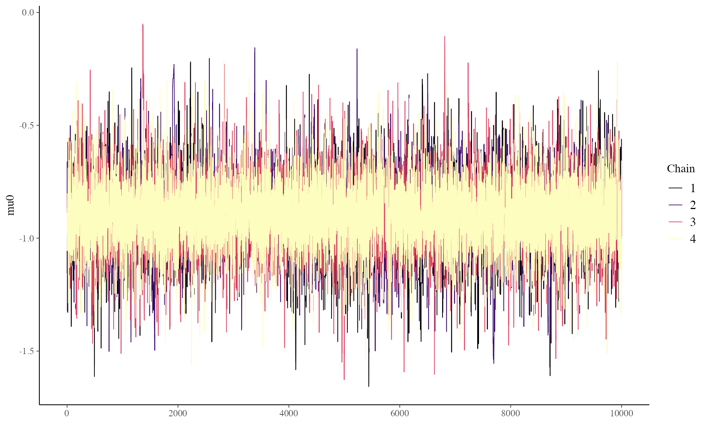
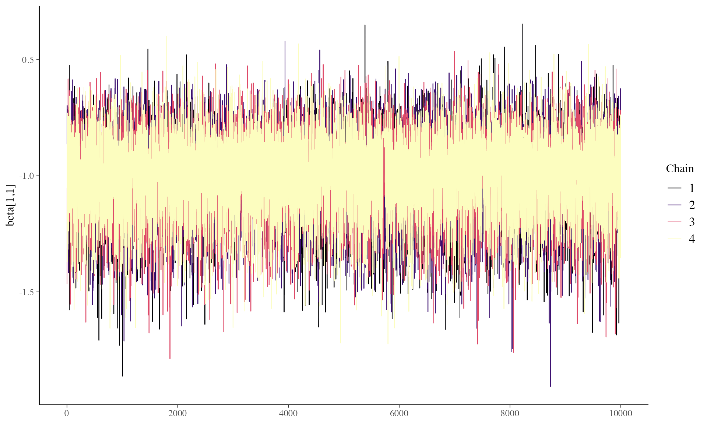
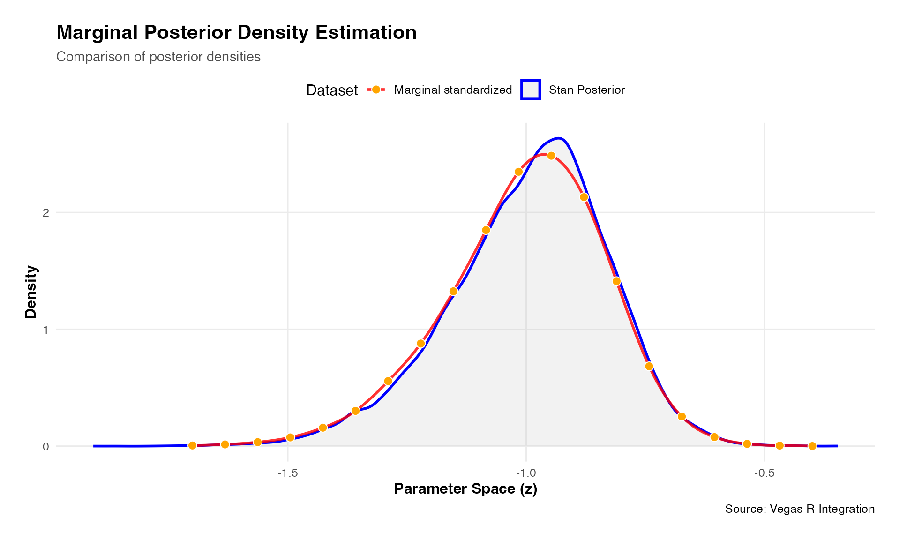
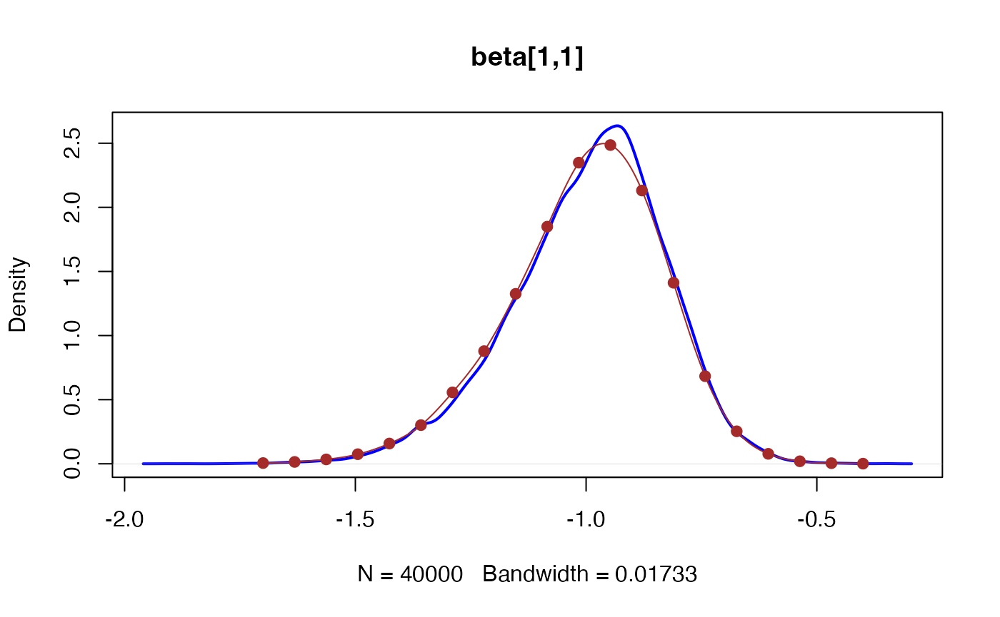

Quickstart
Using Rcpp libraries to write the log posterior function will almost surely be faster, perhaps many times faster, than an R function even when vectorized. Examples of the timing comparison are below.
Example log posterior functions are given below using two Rcpp linear algebra libraries, RcppArmadillo and RcppEigen. These libraries have different pros and cons. RcppArmadillo has some built-in parallelization (via openMP) while RcppEigen does not, but both are highly efficient in their own way. RcppEigen works well with RcppParallel which does not use openMP and can be more problematic with RcppArmadillo.
Data set
The R chunk below creates a simple dataset of three cols:
- a binary response variable y (0/1 = non-responder/responder),
- a (dummy) basket ID variable (=1)
- a binary treatment variable (0/1 = control/test treatment)
The basket ID is currently set fixed at 1, denoting there is only one basket in this trial, i.e. it’s a classical two arm randomized trial design.
library(vegasr)
vegas_initialize()
#> successfully initialized vegas version: 6.4.1
thedata<-vegasr:::fn_create_data_5(99999) # a list of y and treat as matrices
#thedata<-fn_create_data_5(99999)
# this function is in vegasr/R/fn_internal.R
### Stan model
BHM_stan_1 <- "data {
int<lower = 0> K; // number of baskets (K >= 2)
int<lower = 0> N; // total number of participants
//int<lower = 0, upper = N> N_k[K]; // K x 1 vector of basket sample sizes
//int<lower = 0, upper = N> N_k;
int<lower = 1, upper = K> k_vec[N]; // N x 1 vector of basket indicators
int<lower = 0, upper = 1> z_vec[N]; // N x 1 vector of treatment indicators for active treatment arm
int<lower = 0, upper = 1> y[N]; // N x 1 vector of binary responses
}
parameters {
matrix[K,2] beta_tr; // K x 2 matrix of transformed regression coefficients
real mu1; // scalar of hierarchical mean (log odds ratio)
real<lower = 0> sigma1; // scalar of hierarchical SD (log odds ratio)
real mu0; // scalar of hierarchical mean (log odds ratio)
real<lower = 0> sigma0; // scalar of hierarchical SD (log odds ratio)
}
transformed parameters {
matrix[K,2] beta; // K x 2 matrix of regression coefficients (without transformation)
// Calculate beta coefs using transformed betas (leads to better mixing)
for (k in 1:K){
beta[k,1] = mu0 + sigma0 * beta_tr[k,1];
beta[k,2] = mu1 + sigma1 * beta_tr[k,2];
}
}
model {
mu0 ~ normal(0, 2.5); // vectorized normal priors for hierarchical means (specify SD in normal distn)
sigma0 ~ normal(0, 2.5); // vectorized half-normal priors for hierarchical SDs (specify SD in normal distn)
mu1 ~ normal(0, 2.5); // vectorized normal priors for hierarchical means (specify SD in normal distn)
sigma1 ~ normal(0, 2.5); // vectorized half-normal priors for hierarchical SDs (specify SD in normal distn)
beta_tr[,1] ~ normal(0, 1); // vectorized normal prior for the log odds for the control arm
beta_tr[,2] ~ normal(0, 1); // vectorized normal prior for the log odds ratios
for (i in 1:N)
y[i] ~ bernoulli_logit(beta[k_vec[i], 1] + beta[k_vec[i], 2] * z_vec[i]);
}
"
# Create list with input values for Stan model
data_input_1 <- list(
K = length(unique(thedata$basket)), # number of subgroups
N = length(thedata$basket), # total sample size
#N_k = N-k, # sample size per basket
k_vec = as.integer(thedata$basket), # N x 1 vector of subgroup indicators
z_vec =as.integer(thedata$treat), # N x 1 vector of active treatment arm indicators
y = as.integer(thedata$y) # N x 1 vector of binary responses
)
### Compile and fit model
options(mc.cores = parallel::detectCores())
# Compile model (only run the line below once for a simulation study - compilation not dependent on any
# simulation inputs as defined by scenarios or on simulated data)
stan_mod_1 <- stan_model(model_code = BHM_stan_1)
# Fit model
nsamps <- 10000 # number of posterior samples (after removing burn-in) per chain
nburnin <- 5000 # number of burn-in samples to remove at beginning of each chain
nchains <- 4 # number of chains
#BHM_pars_1 <- c("beta","mu0", "sigma0","mu1", "sigma1", "beta","beta_tr") # parameters to sample
start_time <- Sys.time()
stan_fit_2 <- sampling(stan_mod_1, data = data_input_1,
iter = nsamps + nburnin, warmup = nburnin, chains = nchains)
#> Warning: There were 793 divergent transitions after warmup. See
#> https://mc-stan.org/misc/warnings.html#divergent-transitions-after-warmup
#> to find out why this is a problem and how to eliminate them.
#> Warning: Examine the pairs() plot to diagnose sampling problems
#> Warning: Bulk Effective Samples Size (ESS) is too low, indicating posterior means and medians may be unreliable.
#> Running the chains for more iterations may help. See
#> https://mc-stan.org/misc/warnings.html#bulk-ess
#> Warning: Tail Effective Samples Size (ESS) is too low, indicating posterior variances and tail quantiles may be unreliable.
#> Running the chains for more iterations may help. See
#> https://mc-stan.org/misc/warnings.html#tail-ess
end_time <- Sys.time()
end_time - start_time
post_draws_2 <- as.matrix(stan_fit_2) # posterior samples of each parameter
library(bayesplot)
color_scheme_set("viridisA")
p<-mcmc_trace(stan_fit_2,"mu0")
#ggsave("precomputed/vg2_traceplot1_stan.png", p)
print(p)
library(bayesplot)
color_scheme_set("viridisA")
p<-mcmc_trace(stan_fit_2,"beta[1,1]")
#ggsave("precomputed/vg2_traceplot1_stan.png", p)
print(p)
print(summary(stan_fit_2))
#> $summary
#> mean se_mean sd 2.5% 25%
#> beta_tr[1,1] -0.44495397 0.006510131 0.8204817 -2.042654e+00 -0.97354320
#> beta_tr[1,2] -0.16494125 0.026889614 0.7172559 -1.550465e+00 -0.63849170
#> beta_tr[2,1] -0.27632143 0.007875005 0.8193547 -1.881686e+00 -0.80148541
#> beta_tr[2,2] -0.59761220 0.015353317 0.7172137 -2.005861e+00 -1.06821734
#> beta_tr[3,1] -0.02634294 0.017024479 0.8303949 -1.702044e+00 -0.55908983
#> beta_tr[3,2] -0.54418904 0.014292924 0.7096035 -1.945857e+00 -1.00549439
#> beta_tr[4,1] 0.16699461 0.007748054 0.8184822 -1.511175e+00 -0.34820268
#> beta_tr[4,2] 0.52096292 0.043200893 0.7454855 -1.010411e+00 0.06049604
#> beta_tr[5,1] 0.53852806 0.012011212 0.8541662 -1.264311e+00 0.01101638
#> beta_tr[5,2] 0.67741503 0.045850640 0.7765491 -9.278368e-01 0.19855710
#> mu1 0.92364829 0.058887950 0.4281353 3.026262e-01 0.72458472
#> sigma1 0.49545061 0.046093672 0.4235230 3.953361e-02 0.24075680
#> mu0 -0.89522464 0.001466409 0.1516306 -1.199127e+00 -0.98294644
#> sigma0 0.20908861 0.002991505 0.1937457 7.719336e-03 0.07650721
#> beta[1,1] -0.99419413 0.001586737 0.1655259 -1.360595e+00 -1.09538431
#> beta[1,2] 0.81017281 0.001683521 0.2280936 3.595468e-01 0.65995744
#> beta[2,1] -0.95693695 0.001335600 0.1594195 -1.300506e+00 -1.05445919
#> beta[2,2] 0.63242308 0.002288589 0.2432718 1.389411e-01 0.47061755
#> beta[3,1] -0.90281495 0.001141105 0.1517744 -1.215355e+00 -0.99685051
#> beta[3,2] 0.65741763 0.001659930 0.2343958 1.742935e-01 0.50266431
#> beta[4,1] -0.85784721 0.001129515 0.1530877 -1.151200e+00 -0.95823982
#> beta[4,2] 1.10028297 0.001788358 0.2378993 6.579833e-01 0.93387036
#> beta[5,1] -0.78005313 0.001331648 0.1700190 -1.079165e+00 -0.89800726
#> beta[5,2] 1.16915272 0.003711129 0.2571451 6.957964e-01 0.98527877
#> lp__ -650.18574407 0.034310059 3.3585791 -6.575908e+02 -652.22676367
#> 50% 75% 97.5% n_eff Rhat
#> beta_tr[1,1] -0.45614312 0.06483196 1.2621386 15883.94468 1.0001868
#> beta_tr[1,2] -0.16270948 0.29719799 1.2788295 711.50695 1.0072678
#> beta_tr[2,1] -0.29281269 0.23966644 1.3987179 10825.35637 1.0002288
#> beta_tr[2,2] -0.60056319 -0.13813999 0.8276244 2182.19109 1.0030324
#> beta_tr[3,1] -0.03607135 0.51055849 1.6256683 2379.14909 1.0013211
#> beta_tr[3,2] -0.53886671 -0.08438137 0.8520013 2464.84341 1.0033985
#> beta_tr[4,1] 0.17806173 0.69297476 1.7682282 11159.20300 1.0002088
#> beta_tr[4,2] 0.52804034 0.99856451 1.9975530 297.77825 1.0149954
#> beta_tr[5,1] 0.54533200 1.10259569 2.1742016 5057.21143 1.0005782
#> beta_tr[5,2] 0.69324298 1.17646173 2.1907848 286.84488 1.0159504
#> mu1 0.87915033 1.03541626 2.4733179 52.85781 1.0853100
#> sigma1 0.38773376 0.60087497 1.8316171 84.42506 1.0523082
#> mu0 -0.89577956 -0.80808259 -0.5872430 10692.10378 1.0000786
#> sigma0 0.16106153 0.28124755 0.7134480 4194.54450 1.0001711
#> beta[1,1] -0.97784442 -0.88061226 -0.7079815 10882.32909 1.0003953
#> beta[1,2] 0.81298729 0.96023587 1.2573188 18356.46013 1.0002572
#> beta[2,1] -0.94587134 -0.85096082 -0.6652123 14247.21437 0.9999698
#> beta[2,2] 0.64045914 0.80440502 1.0786891 11299.20089 1.0006756
#> beta[3,1] -0.90163872 -0.80571059 -0.6034725 17690.71824 0.9999761
#> beta[3,2] 0.66507055 0.82227853 1.0884802 19939.76078 1.0001409
#> beta[4,1] -0.86253451 -0.76095086 -0.5401923 18369.47365 1.0001670
#> beta[4,2] 1.09268013 1.25810511 1.5879885 17696.10422 1.0007650
#> beta[5,1] -0.79527746 -0.67380985 -0.4113457 16301.06571 1.0000748
#> beta[5,2] 1.16308716 1.34341194 1.6806942 4801.14023 1.0019824
#> lp__ -649.89073698 -647.80044464 -644.4883372 9582.26633 1.0002179
#>
#> $c_summary
#> , , chains = chain:1
#>
#> stats
#> parameter mean sd 2.5% 25%
#> beta_tr[1,1] -0.42113604 0.8120069 -2.024364e+00 -9.330144e-01
#> beta_tr[1,2] -0.25617046 0.7359453 -1.548813e+00 -8.087374e-01
#> beta_tr[2,1] -0.29935937 0.8034370 -1.858961e+00 -8.248378e-01
#> beta_tr[2,2] -0.65592681 0.7022584 -1.976879e+00 -1.128898e+00
#> beta_tr[3,1] -0.07228058 0.8498395 -1.777647e+00 -6.067375e-01
#> beta_tr[3,2] -0.60854985 0.6974121 -1.919716e+00 -1.068904e+00
#> beta_tr[4,1] 0.14878364 0.8144444 -1.553673e+00 -3.721438e-01
#> beta_tr[4,2] 0.37677039 0.8203298 -1.278022e+00 -1.552972e-01
#> beta_tr[5,1] 0.57519562 0.8469226 -1.193209e+00 4.898955e-02
#> beta_tr[5,2] 0.53277404 0.8519080 -1.095226e+00 -7.376244e-03
#> mu1 1.10440482 0.6847957 3.395521e-01 7.490166e-01
#> sigma1 0.63833304 0.6030159 4.142669e-02 2.572746e-01
#> mu0 -0.89457416 0.1479352 -1.196053e+00 -9.763586e-01
#> sigma0 0.20356218 0.1894026 8.846964e-03 6.808267e-02
#> beta[1,1] -0.98899214 0.1650821 -1.362733e+00 -1.087603e+00
#> beta[1,2] 0.80543025 0.2323618 3.533181e-01 6.525964e-01
#> beta[2,1] -0.95650470 0.1568779 -1.295537e+00 -1.051766e+00
#> beta[2,2] 0.62318242 0.2461939 1.220489e-01 4.564186e-01
#> beta[3,1] -0.90268661 0.1475882 -1.212339e+00 -9.915422e-01
#> beta[3,2] 0.65304347 0.2312209 1.762736e-01 5.013920e-01
#> beta[4,1] -0.86045159 0.1509013 -1.151313e+00 -9.554471e-01
#> beta[4,2] 1.10970492 0.2410696 6.506667e-01 9.418486e-01
#> beta[5,1] -0.78312063 0.1647851 -1.070065e+00 -8.936254e-01
#> beta[5,2] 1.18750037 0.2592393 7.053181e-01 1.000697e+00
#> lp__ -650.15864874 3.2712769 -6.574051e+02 -6.521503e+02
#> stats
#> parameter 50% 75% 97.5%
#> beta_tr[1,1] -0.44195883 0.07236005 1.2906266
#> beta_tr[1,2] -0.25748085 0.22394345 1.2534592
#> beta_tr[2,1] -0.31570602 0.20705207 1.3238965
#> beta_tr[2,2] -0.67456123 -0.19322320 0.7326985
#> beta_tr[3,1] -0.08835386 0.50146555 1.5817896
#> beta_tr[3,2] -0.62941419 -0.14296117 0.7776200
#> beta_tr[4,1] 0.16447063 0.66009716 1.7492761
#> beta_tr[4,2] 0.41796212 0.91303443 1.9866717
#> beta_tr[5,1] 0.56304469 1.14767205 2.1647222
#> beta_tr[5,2] 0.58719042 1.10521614 2.1406373
#> mu1 0.90899669 1.11780146 2.9865628
#> sigma1 0.42649746 0.73482149 2.3469979
#> mu0 -0.89161741 -0.81168190 -0.5938073
#> sigma0 0.15414293 0.28054554 0.7189340
#> beta[1,1] -0.96823306 -0.87754303 -0.7139113
#> beta[1,2] 0.81010501 0.95499432 1.2725163
#> beta[2,1] -0.94298768 -0.85237979 -0.6695651
#> beta[2,2] 0.63513675 0.79888809 1.0713032
#> beta[3,1] -0.90104299 -0.80955104 -0.6078142
#> beta[3,2] 0.65988307 0.81304681 1.0827104
#> beta[4,1] -0.86721620 -0.76765087 -0.5494685
#> beta[4,2] 1.10711933 1.27122289 1.5956870
#> beta[5,1] -0.80209562 -0.68321857 -0.4195640
#> beta[5,2] 1.18455829 1.37045709 1.6884603
#> lp__ -649.88670628 -647.83938987 -644.4445405
#>
#> , , chains = chain:2
#>
#> stats
#> parameter mean sd 2.5% 25%
#> beta_tr[1,1] -4.400928e-01 0.8252934 -2.040245e+00 -9.779452e-01
#> beta_tr[1,2] -1.272680e-01 0.7144733 -1.556457e+00 -5.855440e-01
#> beta_tr[2,1] -2.619453e-01 0.8347251 -1.934929e+00 -7.877208e-01
#> beta_tr[2,2] -5.738507e-01 0.7280771 -1.996741e+00 -1.040981e+00
#> beta_tr[3,1] -6.237217e-03 0.8355355 -1.684475e+00 -5.405847e-01
#> beta_tr[3,2] -5.202253e-01 0.7204615 -1.976609e+00 -9.832276e-01
#> beta_tr[4,1] 1.718033e-01 0.8193791 -1.537406e+00 -3.338826e-01
#> beta_tr[4,2] 5.707058e-01 0.7141232 -8.182269e-01 1.030445e-01
#> beta_tr[5,1] 5.227625e-01 0.8612058 -1.316220e+00 -7.486971e-03
#> beta_tr[5,2] 7.397155e-01 0.7473514 -7.516976e-01 2.569966e-01
#> mu1 8.578724e-01 0.2764155 2.606116e-01 7.149207e-01
#> sigma1 4.485578e-01 0.3258417 3.763165e-02 2.397338e-01
#> mu0 -8.976290e-01 0.1549010 -1.203544e+00 -9.868833e-01
#> sigma0 2.117599e-01 0.2002860 7.546477e-03 7.905217e-02
#> beta[1,1] -9.970559e-01 0.1669836 -1.364891e+00 -1.096427e+00
#> beta[1,2] 8.132751e-01 0.2311889 3.593605e-01 6.594534e-01
#> beta[2,1] -9.565857e-01 0.1590578 -1.298467e+00 -1.052521e+00
#> beta[2,2] 6.323273e-01 0.2393072 1.429080e-01 4.741304e-01
#> beta[3,1] -9.018776e-01 0.1528042 -1.209240e+00 -9.990292e-01
#> beta[3,2] 6.573515e-01 0.2345473 1.684095e-01 5.052464e-01
#> beta[4,1] -8.564332e-01 0.1546355 -1.148750e+00 -9.584592e-01
#> beta[4,2] 1.095525e+00 0.2387978 6.574806e-01 9.280677e-01
#> beta[5,1] -7.797181e-01 0.1722912 -1.086075e+00 -9.016567e-01
#> beta[5,2] 1.164294e+00 0.2555508 6.969887e-01 9.830991e-01
#> lp__ -6.502328e+02 3.3789462 -6.575859e+02 -6.523304e+02
#> stats
#> parameter 50% 75% 97.5%
#> beta_tr[1,1] -0.44862473 0.08720351 1.2608928
#> beta_tr[1,2] -0.13591529 0.33573241 1.2578314
#> beta_tr[2,1] -0.27245135 0.26554360 1.4218346
#> beta_tr[2,2] -0.57731043 -0.11694284 0.8894812
#> beta_tr[3,1] -0.01736167 0.53779355 1.6725148
#> beta_tr[3,2] -0.50001167 -0.05121527 0.8784598
#> beta_tr[4,1] 0.19160359 0.70183880 1.7657527
#> beta_tr[4,2] 0.56323236 1.03617012 2.0197294
#> beta_tr[5,1] 0.53588844 1.08513582 2.1915147
#> beta_tr[5,2] 0.73417479 1.21406201 2.2181733
#> mu1 0.86548615 1.01514245 1.3951058
#> sigma1 0.37868663 0.56870410 1.2741777
#> mu0 -0.89785464 -0.80883526 -0.5903032
#> sigma0 0.16031957 0.28209173 0.7244624
#> beta[1,1] -0.98230699 -0.88002018 -0.7085359
#> beta[1,2] 0.81465539 0.96683369 1.2699721
#> beta[2,1] -0.94590757 -0.85051998 -0.6668025
#> beta[2,2] 0.64109179 0.79939462 1.0742054
#> beta[3,1] -0.90219389 -0.80431901 -0.5971921
#> beta[3,2] 0.66675750 0.82055469 1.0872246
#> beta[4,1] -0.86103088 -0.75748971 -0.5356429
#> beta[4,2] 1.08503411 1.25365287 1.5842862
#> beta[5,1] -0.79264594 -0.66969237 -0.4126171
#> beta[5,2] 1.15775253 1.33562817 1.6780809
#> lp__ -649.95171939 -647.82459614 -644.5803714
#>
#> , , chains = chain:3
#>
#> stats
#> parameter mean sd 2.5% 25% 50%
#> beta_tr[1,1] -4.556141e-01 0.8354780 -2.064069e+00 -9.980886e-01 -0.4604173
#> beta_tr[1,2] -1.358893e-01 0.7109247 -1.590982e+00 -5.834663e-01 -0.1321587
#> beta_tr[2,1] -2.619595e-01 0.8256962 -1.838271e+00 -7.976686e-01 -0.2835338
#> beta_tr[2,2] -5.775102e-01 0.7205348 -2.050269e+00 -1.048527e+00 -0.5689330
#> beta_tr[3,1] -4.974938e-03 0.8103259 -1.570851e+00 -5.372166e-01 -0.0167282
#> beta_tr[3,2] -5.243635e-01 0.7036408 -1.932869e+00 -9.735654e-01 -0.5183679
#> beta_tr[4,1] 1.738096e-01 0.8181611 -1.488718e+00 -3.399764e-01 0.1749385
#> beta_tr[4,2] 5.666815e-01 0.7107925 -8.784779e-01 1.172134e-01 0.5612965
#> beta_tr[5,1] 5.359167e-01 0.8564261 -1.272944e+00 1.840085e-03 0.5460253
#> beta_tr[5,2] 7.152695e-01 0.7420763 -8.098144e-01 2.482234e-01 0.7162137
#> mu1 8.648210e-01 0.2695621 3.003509e-01 7.179805e-01 0.8701261
#> sigma1 4.470853e-01 0.3189370 3.784532e-02 2.380057e-01 0.3837357
#> mu0 -8.965692e-01 0.1523397 -1.197576e+00 -9.855484e-01 -0.8993396
#> sigma0 2.097000e-01 0.1959303 7.747285e-03 7.844871e-02 0.1612243
#> beta[1,1] -9.958214e-01 0.1654596 -1.356341e+00 -1.099781e+00 -0.9814245
#> beta[1,2] 8.104548e-01 0.2250471 3.599058e-01 6.611077e-01 0.8137257
#> beta[2,1] -9.566508e-01 0.1625314 -1.307929e+00 -1.056637e+00 -0.9477371
#> beta[2,2] 6.363541e-01 0.2430851 1.389312e-01 4.731110e-01 0.6408421
#> beta[3,1] -9.034722e-01 0.1526111 -1.217529e+00 -9.989403e-01 -0.9023164
#> beta[3,2] 6.590155e-01 0.2355098 1.741403e-01 5.009727e-01 0.6654487
#> beta[4,1] -8.587361e-01 0.1531840 -1.154720e+00 -9.597739e-01 -0.8640507
#> beta[4,2] 1.099324e+00 0.2369133 6.655370e-01 9.329042e-01 1.0907930
#> beta[5,1] -7.802670e-01 0.1721066 -1.079662e+00 -8.998009e-01 -0.7947929
#> beta[5,2] 1.163179e+00 0.2565980 6.878317e-01 9.801158e-01 1.1578749
#> lp__ -6.502058e+02 3.4245837 -6.578054e+02 -6.522766e+02 -649.8961552
#> stats
#> parameter 75% 97.5%
#> beta_tr[1,1] 0.06067530 1.2769164
#> beta_tr[1,2] 0.31192960 1.3112820
#> beta_tr[2,1] 0.26356602 1.4450923
#> beta_tr[2,2] -0.11216071 0.8318365
#> beta_tr[3,1] 0.50648673 1.6044185
#> beta_tr[3,2] -0.07927459 0.8608056
#> beta_tr[4,1] 0.70780490 1.7823124
#> beta_tr[4,2] 1.01795058 1.9922663
#> beta_tr[5,1] 1.11213947 2.1771847
#> beta_tr[5,2] 1.18899384 2.1843960
#> mu1 1.01603675 1.3897367
#> sigma1 0.57192186 1.2564938
#> mu0 -0.80671923 -0.5989662
#> sigma0 0.27867489 0.7078504
#> beta[1,1] -0.88312135 -0.7048615
#> beta[1,2] 0.95999401 1.2434710
#> beta[2,1] -0.84975328 -0.6553505
#> beta[2,2] 0.80908464 1.0771354
#> beta[3,1] -0.80466014 -0.6041739
#> beta[3,2] 0.82611384 1.0949054
#> beta[4,1] -0.76154226 -0.5384562
#> beta[4,2] 1.25295895 1.5840907
#> beta[5,1] -0.67325057 -0.4058498
#> beta[5,2] 1.33637774 1.6806942
#> lp__ -647.78116870 -644.4648609
#>
#> , , chains = chain:4
#>
#> stats
#> parameter mean sd 2.5% 25%
#> beta_tr[1,1] -0.46297294 0.8083599 -2.044963e+00 -9.858478e-01
#> beta_tr[1,2] -0.14043721 0.6994922 -1.520691e+00 -5.869826e-01
#> beta_tr[2,1] -0.28202148 0.8127376 -1.899762e+00 -7.964317e-01
#> beta_tr[2,2] -0.58316106 0.7146499 -1.997910e+00 -1.041642e+00
#> beta_tr[3,1] -0.02187903 0.8236888 -1.666667e+00 -5.496487e-01
#> beta_tr[3,2] -0.52361751 0.7128868 -1.957470e+00 -9.721871e-01
#> beta_tr[4,1] 0.17358190 0.8217782 -1.465585e+00 -3.555340e-01
#> beta_tr[4,2] 0.56969404 0.7122422 -8.463648e-01 1.152584e-01
#> beta_tr[5,1] 0.52023735 0.8510376 -1.283879e+00 -7.545144e-04
#> beta_tr[5,2] 0.72190110 0.7410260 -7.792905e-01 2.442307e-01
#> mu1 0.86749486 0.2676231 3.105904e-01 7.198640e-01
#> sigma1 0.44782627 0.3446660 4.076191e-02 2.298660e-01
#> mu0 -0.89212613 0.1512286 -1.198400e+00 -9.824843e-01
#> sigma0 0.21133230 0.1890537 7.255064e-03 8.114960e-02
#> beta[1,1] -0.99490712 0.1644767 -1.356137e+00 -1.098149e+00
#> beta[1,2] 0.81153110 0.2236107 3.622264e-01 6.656606e-01
#> beta[2,1] -0.95800653 0.1591787 -1.298452e+00 -1.056698e+00
#> beta[2,2] 0.63782854 0.2442182 1.457506e-01 4.770938e-01
#> beta[3,1] -0.90322338 0.1540315 -1.226287e+00 -9.983855e-01
#> beta[3,2] 0.66026010 0.2362451 1.788888e-01 5.036403e-01
#> beta[4,1] -0.85576797 0.1535833 -1.149002e+00 -9.585979e-01
#> beta[4,2] 1.09657828 0.2345388 6.579613e-01 9.344258e-01
#> beta[5,1] -0.77710682 0.1707549 -1.078543e+00 -8.971778e-01
#> beta[5,2] 1.16163718 0.2563359 6.898109e-01 9.793118e-01
#> lp__ -650.14576585 3.3574318 -6.575237e+02 -6.521639e+02
#> stats
#> parameter 50% 75% 97.5%
#> beta_tr[1,1] -0.48361593 0.03631267 1.2088888
#> beta_tr[1,2] -0.14172363 0.30224467 1.2856080
#> beta_tr[2,1] -0.29615028 0.21807709 1.3982602
#> beta_tr[2,2] -0.57949338 -0.13274767 0.8380260
#> beta_tr[3,1] -0.03338576 0.50125213 1.6311112
#> beta_tr[3,2] -0.50822452 -0.06802169 0.8831543
#> beta_tr[4,1] 0.18196729 0.70278138 1.7699225
#> beta_tr[4,2] 0.55874045 1.02295280 1.9820702
#> beta_tr[5,1] 0.53602121 1.06774894 2.1501117
#> beta_tr[5,2] 0.72261262 1.19325086 2.1974688
#> mu1 0.87250433 1.02194454 1.3875893
#> sigma1 0.37110974 0.56786372 1.3055411
#> mu0 -0.89456975 -0.80527810 -0.5728430
#> sigma0 0.16753772 0.28396561 0.6978958
#> beta[1,1] -0.97974948 -0.88213908 -0.7048389
#> beta[1,2] 0.81327215 0.95961344 1.2472160
#> beta[2,1] -0.94669329 -0.85030386 -0.6719047
#> beta[2,2] 0.64716301 0.80963381 1.0864391
#> beta[3,1] -0.90132999 -0.80411747 -0.6039209
#> beta[3,2] 0.66813870 0.82754786 1.0903283
#> beta[4,1] -0.85999115 -0.75855798 -0.5377169
#> beta[4,2] 1.08992671 1.25169694 1.5804141
#> beta[5,1] -0.79236378 -0.66846998 -0.4065387
#> beta[5,2] 1.15488525 1.33243261 1.6795274
#> lp__ -649.82117374 -647.76770851 -644.4968578Example of calling log posterior functions
These functions are available in the source package in fns_arma.cpp or fns_eigen.cpp in /src.
### Call the Rcpp functions to demonstrate correct input and output values
theta <- matrix(data=rep(0.1,length=4*14), ncol = 14) # 5 intercept + 5 slope + 4 hyper
theta<-jitter(theta)
vegasr::eigen_fn_log_post_2(theta, thedata$y, thedata$treat, thedata$basket,0.0, 1.0)
#> [1] -699.3051 -699.3558 -699.3986 -699.1732Timing comparisons
library(vegasr)
vegas_initialize()
#> vegas is already initialized
#> NULL
library(tictoc)
K <- length(unique(thedata$basket))
lower <- c(rep(-0.9999, 2*K), -0.9999, -0.9999, 1e-4, 1e-4)
upper <- c(rep( 0.9999, 2*K), 0.9999, 0.9999, 0.9999, 0.9999)
tic()
result_logEv <- vegasBayesEvidence(
f = vegasr::eigen_fn_log_post_2_par,
lower = lower, upper = upper,
nitn_warm = 10, neval_warm = 100000,
nitn = 10, neval = 100000,
errTol = 0.001, maxIter = 10, seed = 99999, nsearch = 100000,
extra_args=list(
y=thedata$y,
treat=thedata$treat,
basket = thedata$basket,
shiftby=0,uselog=1.)
)
cat("log evidence = ",result_logEv,"\n")
#> log evidence = -655.4743
toc()
#> 9.549 sec elapsed2. Find Marginal
Example using parallel version of log posterior using Eigen library. See fns_eigen.cpp in /src in source package.
tic()
mymarg<-vegasBayesPosterior(f=vegasr::eigen_fn_marg_2,
lower=lower[-1],
upper=upper[-1],
nitn_warm = 10, neval_warm = 50000,
nitn = 10, neval = 50000,
errTol=0.01,maxIter=5,seed=99999,nsearch=10000,
log_evidence = result_logEv,
extra_args=list(
y=thedata$y,
treat=thedata$treat,
basket = thedata$basket,
shiftby=0,uselog=1.,z=-0.98))
#> tolerance not met at z= -0.98
cat("Marginal density f(z) at z = -0.1 = ",mymarg,"\n")
#> Marginal density f(z) at z = -0.1 = 2.619311
toc()
#> 2.646 sec elapsed
#result_logEv<-0.0
#myz<-c(seq(-1.7,-1.21,len=25),seq(-1.2,-0.7,len=50),seq(-0.69,-0.4,len=25))
myz<-c(seq(-1.7,-0.4,len=20))
tic("") # Start timer with a label
f_z<-rep(0,length(myz));
i<-1;
for(z in myz){
f_z[i]<-vegasBayesPosterior(f=vegasr::eigen_fn_marg_2,
lower=lower[-1],
upper=upper[-1],
nitn_warm = 20, neval_warm = 100000,
nitn = 10, neval = 50000,
errTol=1,maxIter=20,seed=99999,nsearch=10000,
log_evidence = result_logEv,
extra_args=list(
y=thedata$y,
treat=thedata$treat,
basket = thedata$basket,
shiftby=0,uselog=1.,z=z))
cat("i=",i," z=",z," fz=",f_z[i],"\n")
i<-i+1
}
#> i= 1 z= -1.7 fz= 0.006231395
#> i= 2 z= -1.631579 fz= 0.01599801
#> i= 3 z= -1.563158 fz= 0.0373222
#> i= 4 z= -1.494737 fz= 0.08167091
#> i= 5 z= -1.426316 fz= 0.1726999
#> i= 6 z= -1.357895 fz= 0.3295634
#> i= 7 z= -1.289474 fz= 0.6087756
#> i= 8 z= -1.221053 fz= 0.9603211
#> i= 9 z= -1.152632 fz= 1.449026
#> i= 10 z= -1.084211 fz= 2.021634
#> i= 11 z= -1.015789 fz= 2.567328
#> i= 12 z= -0.9473684 fz= 2.717344
#> i= 13 z= -0.8789474 fz= 2.329717
#> i= 14 z= -0.8105263 fz= 1.543413
#> i= 15 z= -0.7421053 fz= 0.7469236
#> i= 16 z= -0.6736842 fz= 0.2769838
#> i= 17 z= -0.6052632 fz= 0.08491858
#> i= 18 z= -0.5368421 fz= 0.02140802
#> i= 19 z= -0.4684211 fz= 0.005130108
#> i= 20 z= -0.4 fz= 0.001096065
toc() # Stops timer and prints
#> : 62.734 sec elapsed
logun<-log(f_z)+result_logEv # back to unstand log density
f_z_un<-exp(logun) # back to unstand density
ff_interp <- splinefun(myz, as.matrix(f_z_un), method = "fmm") # fit fun to every point
evA<-integrate(ff_interp,min(myz),max(myz))$value # find area
ff_z<-f_z_un/evA # divide by area to standardize marginal density
ff_interp <- splinefun(myz, as.matrix(ff_z), method = "fmm") # now
#plot(myz,predict(loess(ff_z ~ myz, span = 0.1,family="g",from=min(myz),to=max(myz))))
# 3. Display the plot
# plotting code above in hidden chunk
if(!nzchar(Sys.getenv("_R_CHECK_PACKAGE_NAME_"))){
print(p)
}
plot(density(extract(stan_fit_2,"beta[1,1]")$"beta[1,1]"),main="beta[1,1]",col="blue",lwd=2)
#points(myz,as.matrix(f_z),col="brown",pch=21,bg="brown",cex=0.5)
#f_interp <- splinefun(myz, as.matrix(f_z), method = "fmm")
#lines(myz,f_interp(myz),col="purple")
points(myz,as.matrix(ff_z),col="brown",pch=21,bg="brown")
#ff_interp <- splinefun(myz, as.matrix(ff_z), method = "fmm")
lines(z_grid,ff_interp(z_grid),col="brown")
#as.numeric(ff_interp(z_grid))
#lines(myz,predict(loess(ff_z ~ myz, span = 0.1,family="g")),col="red")
#lines(density(extract(stan_fit_2,"beta[1,1]")$"beta[1,1]"),main="beta[1,1]",col="blue",lwd=2)